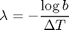
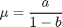
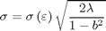

function [ mu, sigma, lambda ] = CalibrateORLeastSquares(S, deltat)
if (size(S,2) > size(S,1)) S = S'; end [ k,~,resid ] = regress(S(2:end)-S(1:end-1),[ ones(size(S(1:end-1))) S(1:end-1) ] ); a = k(1); b = k(2);

lambda = -log(b)/deltat;

mu = a/(1-b);

sigma = std(resid) * sqrt( 2*lambda/(1-b^2) );
end